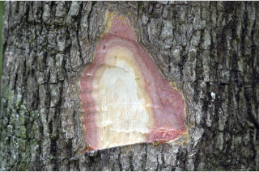
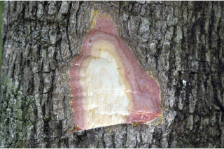
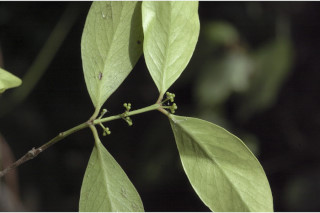
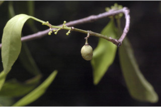
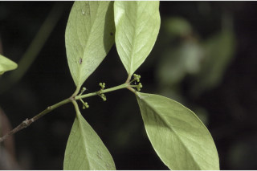
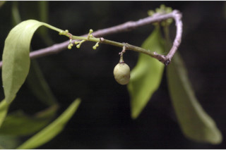

Small evergreen trees, up to 5 m tall.
5 ಮೀ ಎತ್ತರದವರೆಗೆ ಬೆಳೆಯುವ ಸಣ್ಣ ಗಾತ್ರದ ನಿತ್ಯಹರಿದ್ವರ್ಣಮರಗಳು.
5 മീറ്റര് വരെ ഉയരത്തില് വളരുന്ന, ചെറിയ നിത്യഹരിത മരങ്ങള്
சிறிய மரங்கள், 5 மீ. உயரம் வரை வளரக்கூடியது
Bark grey, small scaly; blaze reddish.
ತೊಗಟೆ ಬೂದು ಬಣ್ಣ ಹೊಂದಿದ್ದು ಸಣ್ಣ ಶಲ್ಕೆಗಳಿಂದ ಕೂಡಿರುತ್ತವೆ; ಕಚ್ಚು ಮಾಡಿದ ಜಾಗ ಕೆಂಪಾಗಿರುತ್ತದೆ.
ചെറിയ ശല്ക്കങ്ങളോടുകൂടിയ, നരച്ച പുറംതൊലി; വെട്ടുപാടിന് ചുവപ്പുനിറം.
மரத்தின் பட்டை சாம்பல் நிறமானது, சிறு செதில்களாக உதிருபவை; உள்பட்டை சிவப்பு நிறமானது.
Branchlets quadrangular, glabrous.
ಕಿರುಕೊಂಬೆಗಳು ನಾಲ್ಕು ಕೋನಗಳನ್ನು ಹೊಂದಿರುತ್ತವೆ ಹಾಗೂ ರೋಮರಹಿತವಾಗಿರುತ್ತವೆ.
അരോമിലവും, ചതുഷ്കോണത്തിലുള്ളതുമായ ഉപശാഖകള്്.
சிறிய நுனிக்கிளைகள் குறுக்குவெட்டுத் தோற்றத்தில் நான்கு கோணங்களுடையது, உரோமங்களற்றது.
Leaves simple, opposite, decussate; petiole 0.3 cm long; lamina 4-6 x 1-2 cm, generally obovate, sometimes elliptic, apex obtuse, base cuneate, margin entire, coriaceous, greyish on both sides when dry; midrib slightly raised above; secondary_nerves 4-6 pairs; tertiary_nerves broadly reticulate.
ಎಲೆಗಳು ಸರಳವಾಗಿದ್ದು,ಕತ್ತರಿಯಾಕಾರದ ಅಭಿಮುಖ ಜೋಡನಾ ವ್ಯವಸ್ತೆ ಯಲ್ಲಿದ್ದು 0.3 ಸೆಂ.ಮೀ ಉದ್ದದ ಎಲೆತೊಟ್ಟುಗಳನ್ನು ಹೊಂದಿರುತ್ತವೆ; ಎಲೆಪತ್ರಗಳು 4-6 X1-2 ಸೆಂ.ಮೀ ಗಾತ್ರ ಹೊಂದಿದ್ದು, ಸಾಮಾನ್ಯವಾಗಿ ಬುಗುರಿಯ ಆಕಾರ ಕೆಲವು ವೇಳೆ ಅಂಡ ವೃತ್ತಾಕಾರದಲ್ಲಿರುತ್ತವೆ, ಎಲೆಗಳು ಚೂಪಲ್ಲದ ಮಾದರಿಯ ತುದಿಯನ್ನೂ, ಬೆಣೆಯಾಕಾರದ ಬುಡವನ್ನೂ ಹೊಂದಿದ್ದು, ತೊಗಲಿನ್ನೋಲುವ ಮಾದರಿಯಲ್ಲಿದ್ದು, ನಯವಾದ ಅಂಚನ್ನು ಹೊಂದಿರುತ್ತವೆ, ಒಣಗಿದ ಎಲೆಗಳ ತಳಭಾಗ ಹಾಗೂ ಮೇಲ್ಭಾಗ ಬೂದು ಬಣ್ಣದಲ್ಲಿರುತ್ತವೆ;ಮಧ್ಯನಾಳ ಪತ್ರದ ಮೇಲ್ಭಾಗದಲ್ಲಿ ತುಸು ಉಬ್ಬಿರುತ್ತದೆ; ಎರಡನೇ ದರ್ಜೆಯ ನಾಳಗಳು 4 ರಿಂದ 6 ಜೋಡಿಗಳು; ಮೂರನೇ ದರ್ಜೆಯ ನಾಳಗಳು ವಿಶಾಲ ಜಾಲಬಂಧ ವಿನ್ಯಾಸದಲ್ಲಿರುತ್ತವೆ.
സമ്മുഖ, ഡെക്കുസേറ്റ് ക്രമത്തിലുള്ള ലഘുപത്രങ്ങള്; ഇലഞെട്ടിന് 0.3 സെ.മി നീളം; പത്രഫലകത്തിന് 4 സെ.മി മുതല് 6 സെ.മി വരെ നീളവും 1 സെ.മി. മുതല് 2 സെ.മി വരെ വീതിയും, സാധാരണയായി അപഅണ്ഡാകാരം, ചിലപ്പോള് ദീര്ഘവൃത്താകാരം ഉപകോണാകൃതിയിലുള്ള പത്രാഗ്രം, ആപ്പാകൃതിയിലുള്ള പത്രാധാരം, അവിഭജിതമായ അരികുകള്, ചര്മ്മില പ്രകൃതം, ഉണങ്ങുമ്പോള് ഇരുവശത്തും ചാരനിറം; ചെറുതായി മുകളില് ഉയര്ന്നു നില്ക്കുന്ന മുഖ്യസിര; 4 മുതല് 6 വരെ ജോഡി ദ്വിതീയ ഞരമ്പുകള്; വീതിയേറിയ ജാലിക തീര്ക്കുന്ന ത്രിതീയ ഞരമ്പുകള്.
இலைகள் தனித்தவை, எதிரடுக்கமானவை, குறுக்குமறுக்கமானவை; இலைக்காம்பு 0.3 செ.மீ. நீளமானது; இலை அலகு 4-6 X 1-2 செ.மீ., பொதுவாக தலைகீழ் முட்டை வடிவம், சிலசமயங்களில் நீள்வட்டம், அலகின் நுனி மழுங்கியது, அலகின் தளம் ஆப்பு வடிவானது, அலகின் விளிம்பு முழுமையானது, கோரியேசியஸ், உலரும் போது சாம்பல் நிறமடைகிறது; மையநரம்பு மேற்பரப்பில் அலகின் பரப்பைவிட உயர்ந்தது; இரண்டாம் நிலை நரம்புகள் 4-6 ஜோடிகள்; மூன்றாம் நிலை நரம்புகள் அகன்ற வலைப்பின்னல் போன்றது.
Inflorescence axillary cymes; flowers minute, white.
ಪುಷ್ಪಮಂಜರಿ ಅಕ್ಷಾಕಂಕುಳಿನಲ್ಲಿರುವ ಮಧ್ಯಾರಂಭಿ ಮಾದರಿಯವು;ಹೂಗಳು ಸೂಕ್ಷ್ಮ ಗಾತ್ರದವುಗಳಾಗಿದ್ದು ಬಿಳಿ ಬಣ್ಣ ಹೊಂದಿರುತ್ತವೆ.
പൂങ്കുലകള് കക്ഷീയ സൈമുകളാണ്; നന്നേ ചെറിയ, വെളുത്ത പൂക്കള്.
மஞ்சரி இலைக்கோணங்களில் அமைந்த சைம் வகை; மலர்கள் நுண்ணியவை, வெள்ளை நிறம்.
Indehiscent, ovoid, 1-2 celled; 1-seeded, covered by arillus-like testa.
ಕಾಯಿಗಳು ಬಿರಿಯದ ಮಾದರಿಯವು; ಕೋಶಗಳು 1ರಿಂದ 2 ಇದ್ದು, ಏರಿಲ್ ಮಾದರಿಯ ಹೊರಕವಚದಿಂದ ಆವೃತವಾಗಿರುವ ಒಂದು ಬೀಜವನ್ನೊಳಗೊಂಡಿರುತ್ತವೆ.
ഒന്നോ രാേ അറകളുള്ളതും, അണ്ഡാകാരത്തിലുള്ളതുമായ പൊട്ടിത്തുറക്കാത്ത കായ; അരില് പോലുള്ള അധ്യാവരണത്താല് ആവൃതമായ ഒറ്റവിത്തുമാത്രം.
வெடியாக்கனி, முட்டை வடிவானது, 1-2 அறைகளுடையது; 1-விதையுடையது, பத்ரி (ஏரில்) போன்ற விதையுறை (டெஸ்டா) உடையது.
 


 


